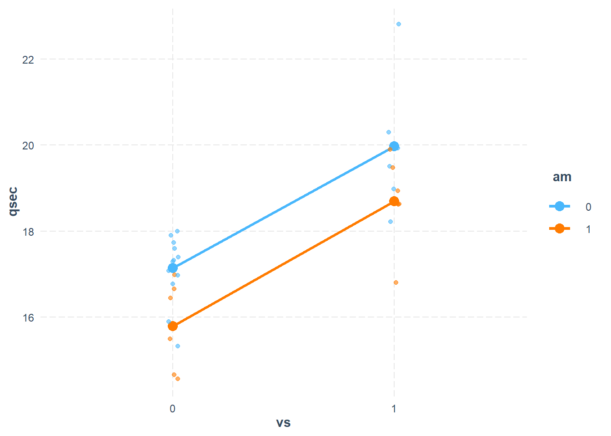
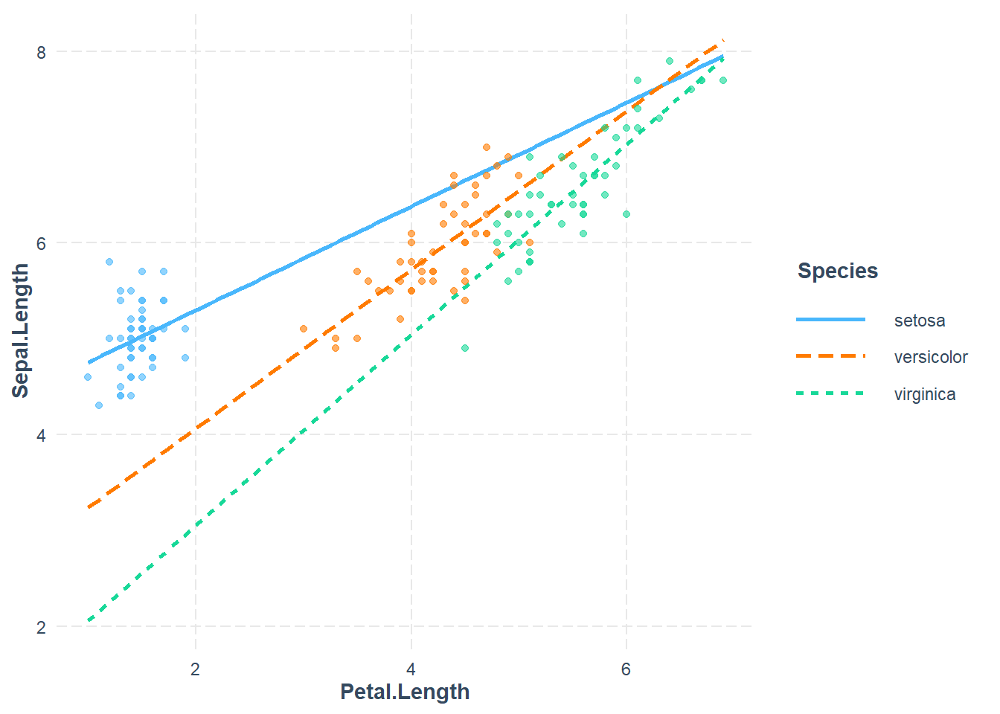
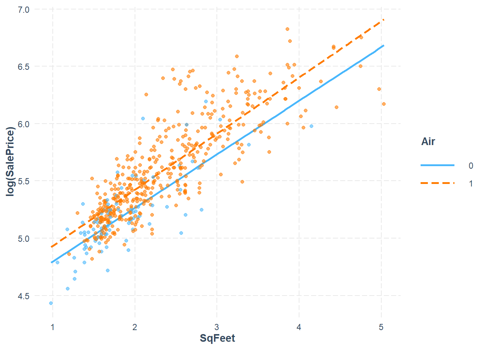
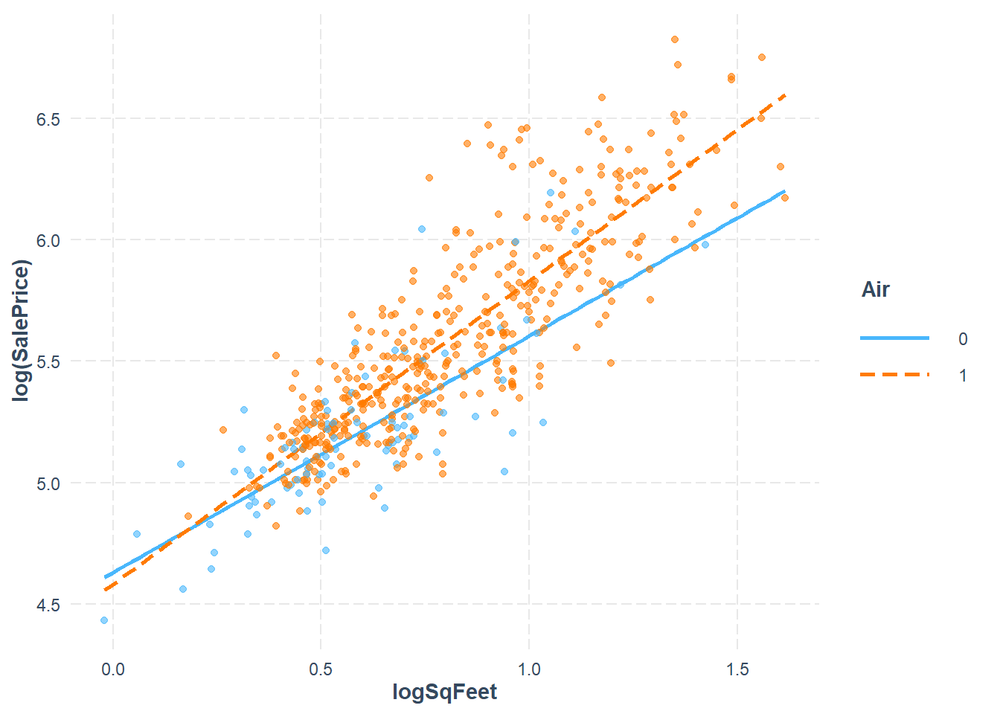
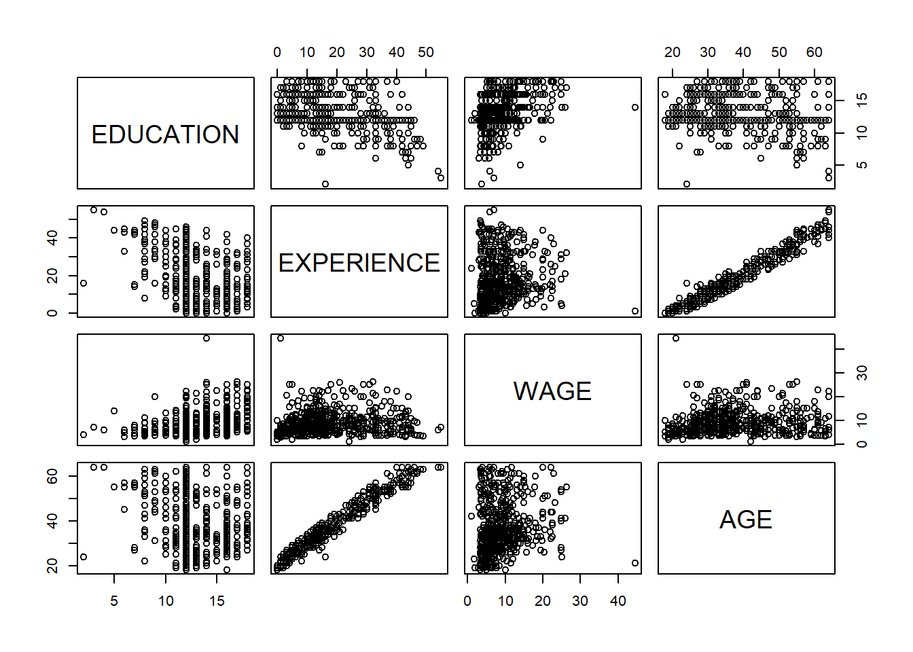

29.2 Interaction plot for mtcars - looking for an interaction
library(interactions)#In the mtcars dataset, am and vs are simply numerical variable# I want to treat them as categorical variables - aka "factor variables"mtcars$am <-factor(mtcars$am)mtcars$vs <-factor(mtcars$vs)mt.fit.cat <-lm(qsec ~1+ am * vs , data=mtcars)cat_plot(mt.fit.cat, pred="vs", modx="am", geom="line", plot.points=TRUE, data=mtcars, interval=F)

The fact that these are parallel indicates that there is no measurable interaction - the effects of engine shape and transmission type seem to be additive. We also see that when we look at the model output:
The \(p\)-value on the am-vs interaction term is really high: that’s .917 indicating that we have no statistical evidence of an interaction. In other words, the inclusion of an interaction term in the model is not statistically justified.
29.3 Multiple categorical levels : the iris dataset
The iris dataset is somewhat famous - we have 50 samples from each of three iris species: Setosa, Versicolor and Virginica. Four characteristics are measured: Sepal length & width, and Petal length & width.
#fix the factor leveling just in caseiris$Species <-factor(iris$Species, levels =c("setosa", "versicolor", "virginica"))
Species is a categorical (factor) variable with three values. In a case like this we still need a numerical encoding of the categorical variable. But using 0, 1 and 2 would be problematic for two reasons. First it implies a progression - an ordering - across the three categorical levels. Secondly, it implies that the effect moving from level 0 to 1 is the same effect of moving from level 1 to level 2.
The proper way to model such a situation is to identify one of the categorical levels (values) to be a “baseline”. R will do this for you alphabetically. In this case setosa is the first alphabetically. Then we create a dummy (indicator) variable for each of the remaining levels. Again - this is automatically done for us by R.
If we were to predict sepal length based only on species, the model would look like this: \[Y_i = \beta_0 + \beta_1 X_{i,1} + \beta_2 X_{i,2} + \epsilon\] The three cases are handled by the indicator variables as follows:
Call:
lm(formula = Sepal.Length ~ 1 + Species, data = iris)
Residuals:
Min 1Q Median 3Q Max
-1.6880 -0.3285 -0.0060 0.3120 1.3120
Coefficients:
Estimate Std. Error t value Pr(>|t|)
(Intercept) 5.0060 0.0728 68.762 < 2e-16 ***
Speciesversicolor 0.9300 0.1030 9.033 8.77e-16 ***
Speciesvirginica 1.5820 0.1030 15.366 < 2e-16 ***
---
Signif. codes: 0 '***' 0.001 '**' 0.01 '*' 0.05 '.' 0.1 ' ' 1
Residual standard error: 0.5148 on 147 degrees of freedom
Multiple R-squared: 0.6187, Adjusted R-squared: 0.6135
F-statistic: 119.3 on 2 and 147 DF, p-value: < 2.2e-16
\[\hat{Y} = 5.0060 + .93 X_{vers} + 1.582 X_{vir}\] - For a setosa variety, \(X_1=0, X_2=0\) so the predicted sepal length is just 5.006 - For versicolor, \(X_1=1, X_2=0\) so the predicted length is 5.006+.93=5.936 - For viginica, \(X_1=0, X_2=1\) so the predicted length is 5.006 + 1.582 = 6.588
In other words, the intercept is the mean response for the baseline, the \(\beta_1, \beta_2\) coefficients are the mean difference between each other case and the baseline.
If you wanted versicolor to be the baseline instead you can refactor your variable
Call:
lm(formula = Sepal.Length ~ 1 + Species, data = iris)
Residuals:
Min 1Q Median 3Q Max
-1.6880 -0.3285 -0.0060 0.3120 1.3120
Coefficients:
Estimate Std. Error t value Pr(>|t|)
(Intercept) 5.9360 0.0728 81.536 < 2e-16 ***
Speciessetosa -0.9300 0.1030 -9.033 8.77e-16 ***
Speciesvirginica 0.6520 0.1030 6.333 2.77e-09 ***
---
Signif. codes: 0 '***' 0.001 '**' 0.01 '*' 0.05 '.' 0.1 ' ' 1
Residual standard error: 0.5148 on 147 degrees of freedom
Multiple R-squared: 0.6187, Adjusted R-squared: 0.6135
F-statistic: 119.3 on 2 and 147 DF, p-value: < 2.2e-16
If you are curious about the dummy variable encoding that R is doing, you can look at the “model matrix”
model.matrix(sepal.fit)
But I don’t want to refactor the variable, so I’m going to revert the dataset to its default factoring.
rm(iris)
29.4 A Model with categorical and quantitative variables
If we were attempting to predict Sepal Length from Petal Length and Species, a model might look like this: \[Sepal.L = \beta_0 + \beta_1 Species_{Vers} + \beta_2 Species_{Vir} + \beta_3 Petal.L + \epsilon\]
Call:
lm(formula = Sepal.Length ~ 1 + Species + Petal.Length, data = iris)
Residuals:
Min 1Q Median 3Q Max
-0.75310 -0.23142 -0.00081 0.23085 1.03100
Coefficients:
Estimate Std. Error t value Pr(>|t|)
(Intercept) 3.68353 0.10610 34.719 < 2e-16 ***
Speciesversicolor -1.60097 0.19347 -8.275 7.37e-14 ***
Speciesvirginica -2.11767 0.27346 -7.744 1.48e-12 ***
Petal.Length 0.90456 0.06479 13.962 < 2e-16 ***
---
Signif. codes: 0 '***' 0.001 '**' 0.01 '*' 0.05 '.' 0.1 ' ' 1
Residual standard error: 0.338 on 146 degrees of freedom
Multiple R-squared: 0.8367, Adjusted R-squared: 0.8334
F-statistic: 249.4 on 3 and 146 DF, p-value: < 2.2e-16
Let’s just interpret the coefficients for a moment:
First off, setosa is the baseline case. The coefficient of Petal length is 0.90456; this means that controlling for species (i.e. holding species constant) a 1 cm increase in Petal Length is associated with a .90456 cm average increase in Sepal Length. \[\hat{sepal.L}_{set} = 3.68 + .906 petal.L\]
For the versicolor coefficient, -1.60097 is interpreted as the average difference in sepal length between a versicolor compared to a setosa iris, controlling for petal length. \[\hat{sepal.L}_{vers} = (3.68 -1.6) + .906 petal.L\]
I’m not going to check the model assumptions at the moment because that’s not my primary focus. I want to plot the model with the quantitative and categorical predictor:
You can see clearly that the model fit encodes three parallel lines. We can get the linear equations by writing out the cases. Take setosa first: \[\hat{Sepal.L}_{Set} = 3.68 + 0.90456 Petal.L\] For versicolor we have \[\hat{Sepal.L}_{Vers} = 3.68 - 1.6 + 0.90456 Petal.L = 2.08 + .90456 Petal.L\]
29.5 Interactions between categorical and quantitative variables
Adding an interaction between the categorical predictor and the quantitative predictor allows more model flexibility. It allows for different intercepts and different slopes.
iris.fit<-lm(Sepal.Length ~1+ Petal.Length + Species + Petal.Length:Species, data=iris)# or I can use 1 + Petal.Length * Speciesinteract_plot(iris.fit, pred=Petal.Length, modx=Species, plot.points=TRUE)

Looking at the model summary tells us which of the interactions are statistically supported.
summary(iris.fit)
Call:
lm(formula = Sepal.Length ~ 1 + Petal.Length + Species + Petal.Length:Species,
data = iris)
Residuals:
Min 1Q Median 3Q Max
-0.73479 -0.22785 -0.03132 0.24375 0.93608
Coefficients:
Estimate Std. Error t value Pr(>|t|)
(Intercept) 4.2132 0.4074 10.341 < 2e-16 ***
Petal.Length 0.5423 0.2768 1.959 0.05200 .
Speciesversicolor -1.8056 0.5984 -3.017 0.00302 **
Speciesvirginica -3.1535 0.6341 -4.973 1.85e-06 ***
Petal.Length:Speciesversicolor 0.2860 0.2951 0.969 0.33405
Petal.Length:Speciesvirginica 0.4534 0.2901 1.563 0.12029
---
Signif. codes: 0 '***' 0.001 '**' 0.01 '*' 0.05 '.' 0.1 ' ' 1
Residual standard error: 0.3365 on 144 degrees of freedom
Multiple R-squared: 0.8405, Adjusted R-squared: 0.8349
F-statistic: 151.7 on 5 and 144 DF, p-value: < 2.2e-16
In this case neither of them.
The interpretation of these interaction coefficients gives us an adjustment to the slope on Petal.Length. Here’s the full model with coefficient estimates (rounded):
The indicator variables \(Species_{Ver}\) and \(Species_{Vir}\) are (0,0) for setosa, (1,0) for versicolor and (0,1) for virginica.
For instance, the model for Setosa would be:
\[\hat{Sepal.L}_{Vers} = 4.2 + .54Petal.L\] For the versicolor two more coefficients will play a part: \[\hat{Sepal.L}_{Ver} = 4.2 + .54Petal.L + -1.8(1) +0.29Petal.L(1)\] Which simplifies to \[\hat{Sepal.L}_{Ver} = 2.4 + .83 Petal.L\] This is the linear equation for the orange dotted line above. We could do the same for virginica but the idea is the same.
So the coefficients of the interaction terms can be interpreted as the difference in slope between the base case (versicolor) and the other cases (setosa or virginica).
That is how we use interactions between categorical variables and quantitative variables.
You can actually calculate these coefficients by subsetting the data into three species and fitting three linear models!
An interaction between two quantitative variables is one form of a non-additive relationship with the response variable.
Here is a dataset where the linear model includes an interaction between two continuous variables.
states <-as.data.frame(state.x77)summary(states)
Population Income Illiteracy Life Exp
Min. : 365 Min. :3098 Min. :0.500 Min. :67.96
1st Qu.: 1080 1st Qu.:3993 1st Qu.:0.625 1st Qu.:70.12
Median : 2838 Median :4519 Median :0.950 Median :70.67
Mean : 4246 Mean :4436 Mean :1.170 Mean :70.88
3rd Qu.: 4968 3rd Qu.:4814 3rd Qu.:1.575 3rd Qu.:71.89
Max. :21198 Max. :6315 Max. :2.800 Max. :73.60
Murder HS Grad Frost Area
Min. : 1.400 Min. :37.80 Min. : 0.00 Min. : 1049
1st Qu.: 4.350 1st Qu.:48.05 1st Qu.: 66.25 1st Qu.: 36985
Median : 6.850 Median :53.25 Median :114.50 Median : 54277
Mean : 7.378 Mean :53.11 Mean :104.46 Mean : 70736
3rd Qu.:10.675 3rd Qu.:59.15 3rd Qu.:139.75 3rd Qu.: 81163
Max. :15.100 Max. :67.30 Max. :188.00 Max. :566432
First I want to fit a model that does not include an interaction term.
Call:
lm(formula = Income ~ Illiteracy + Murder + `HS Grad`, data = states)
Residuals:
Min 1Q Median 3Q Max
-1068.21 -274.66 -40.47 182.69 1203.82
Coefficients:
Estimate Std. Error t value Pr(>|t|)
(Intercept) 2017.96 750.10 2.690 0.009917 **
Illiteracy -176.84 187.25 -0.944 0.349919
Murder 30.48 26.70 1.141 0.259591
`HS Grad` 45.19 11.51 3.925 0.000288 ***
---
Signif. codes: 0 '***' 0.001 '**' 0.01 '*' 0.05 '.' 0.1 ' ' 1
Residual standard error: 490.1 on 46 degrees of freedom
Multiple R-squared: 0.4028, Adjusted R-squared: 0.3638
F-statistic: 10.34 on 3 and 46 DF, p-value: 2.551e-05
The interaction term can be added to the formula explicitly by including an addition Illiteracy:Murder term, or just use the asterisk to include the interaction and both single terms as well.
Call:
lm(formula = Income ~ Illiteracy * Murder + `HS Grad`, data = states)
Residuals:
Min 1Q Median 3Q Max
-916.27 -244.42 28.42 228.14 1221.16
Coefficients:
Estimate Std. Error t value Pr(>|t|)
(Intercept) 1414.46 737.84 1.917 0.06160 .
Illiteracy 753.07 385.90 1.951 0.05724 .
Murder 130.60 44.67 2.923 0.00540 **
`HS Grad` 40.76 10.92 3.733 0.00053 ***
Illiteracy:Murder -97.04 35.86 -2.706 0.00958 **
---
Signif. codes: 0 '***' 0.001 '**' 0.01 '*' 0.05 '.' 0.1 ' ' 1
Residual standard error: 459.5 on 45 degrees of freedom
Multiple R-squared: 0.4864, Adjusted R-squared: 0.4407
F-statistic: 10.65 on 4 and 45 DF, p-value: 3.689e-06
The interactions between variables can be explored using interaction plots:
interact_plot(fiti, pred = Illiteracy, modx = Murder)
The interaction plot takes the other quantitative variable (HS Grad) and sets its value to be the mean (53.11). Three lines are given here indicating how the line changes as the Murder variable may vary from its average mean value.
\[\hat{Income} = 1414.46+753 Ill + 130.60 Mur + 40.76(53.11) -97.04 Ill \times Mur\] You can see that as the murder rate increases the effect of illiteracy on income changes. This is reflected in the negative value for the interaction. In this case the Mur variable is continuous rather than categorical. The interpretation of the coefficient on the interaction term is a little more tricky to put into words. That’s beyond this course.
The important take-away here is that the interaction term is statistically significant, so we have strong evidence from the data that there is a real interaction in the model. The average effect of Illiteracy and Murder rate on per capita income is not purely additive.
29.7 MT Cars polynomial model
Let’s briefly compare a linear model with a second order model
Call:
lm(formula = mpg ~ 1 + hp, data = mtcars)
Residuals:
Min 1Q Median 3Q Max
-5.7121 -2.1122 -0.8854 1.5819 8.2360
Coefficients:
Estimate Std. Error t value Pr(>|t|)
(Intercept) 30.09886 1.63392 18.421 < 2e-16 ***
hp -0.06823 0.01012 -6.742 1.79e-07 ***
---
Signif. codes: 0 '***' 0.001 '**' 0.01 '*' 0.05 '.' 0.1 ' ' 1
Residual standard error: 3.863 on 30 degrees of freedom
Multiple R-squared: 0.6024, Adjusted R-squared: 0.5892
F-statistic: 45.46 on 1 and 30 DF, p-value: 1.788e-07
plot(mtcars.pow1, which=1)
mtcars.pow2 <-lm(mpg ~1+ hp +I(hp^2), data=mtcars)summary(mtcars.pow2)
Call:
lm(formula = mpg ~ 1 + hp + I(hp^2), data = mtcars)
Residuals:
Min 1Q Median 3Q Max
-4.5512 -1.6027 -0.6977 1.5509 8.7213
Coefficients:
Estimate Std. Error t value Pr(>|t|)
(Intercept) 4.041e+01 2.741e+00 14.744 5.23e-15 ***
hp -2.133e-01 3.488e-02 -6.115 1.16e-06 ***
I(hp^2) 4.208e-04 9.844e-05 4.275 0.000189 ***
---
Signif. codes: 0 '***' 0.001 '**' 0.01 '*' 0.05 '.' 0.1 ' ' 1
Residual standard error: 3.077 on 29 degrees of freedom
Multiple R-squared: 0.7561, Adjusted R-squared: 0.7393
F-statistic: 44.95 on 2 and 29 DF, p-value: 1.301e-09
plot(mtcars.pow2, which=1)
For the moment let’s consider a third order polynomial just to see if the linearity is better satisfied.
mtcars.pow3 <-lm(mpg ~1+ hp +I(hp^2) +I(hp^3), data=mtcars)summary(mtcars.pow3)
Call:
lm(formula = mpg ~ 1 + hp + I(hp^2) + I(hp^3), data = mtcars)
Residuals:
Min 1Q Median 3Q Max
-4.8605 -1.3972 -0.5736 1.6461 9.0738
Coefficients:
Estimate Std. Error t value Pr(>|t|)
(Intercept) 4.422e+01 5.961e+00 7.419 4.43e-08 ***
hp -2.945e-01 1.178e-01 -2.500 0.0185 *
I(hp^2) 9.115e-04 6.863e-04 1.328 0.1949
I(hp^3) -8.701e-07 1.204e-06 -0.722 0.4760
---
Signif. codes: 0 '***' 0.001 '**' 0.01 '*' 0.05 '.' 0.1 ' ' 1
Residual standard error: 3.103 on 28 degrees of freedom
Multiple R-squared: 0.7606, Adjusted R-squared: 0.7349
F-statistic: 29.65 on 3 and 28 DF, p-value: 7.769e-09
plot(mtcars.pow3, which=1)
29.8 Variable Transformations
Variable transformations can be effective at remedying violated regression assumptions. Briefly here are the assumptions:
The error term has a normal distribution
The response variable has a linear relationship with the predictors. In other words, the errors have zero mean
The error term has constant variance
The errors are independent.
The fourth assumption is hard to check, but the first three can be checked with diagnostic plots of the residuals.
Transformation of either a predictor variable or the response variable may be appropriate, often with theoretical justification. But first let’s explore the effect of variable transformation.
You can see that squaring the values give us a more symmetric distribution. Generally speaking, if you have left-skewed data, raising your values to a power \(>1\) can do this for you.
On the other hand, here is some right-skewed data - an exponential population
A right skew is amplified by taking your data to a higher power, but square roots and log transformations can make your data more symmetric and sometimes more normally distributed.
Variable transformations can often be effective means to remedy violated regression assumptions.
29.8.1 Real Estate Air Conditioning
The real estate data is in the realestate.txt file.
While there are many variables, we’ll focus only on three: - Y = sale price of the home (in 1000s of dollars) - X1 = square footage of the home (in 1000s of sqft) - X2 = whether or not the home has air conditioning
The interaction model is \[Y_i = \beta_0 + \beta_1 X_{i,1} + \beta_2 X_{i,2} + \beta_3 X_{i,1}X_{i,2} + \epsilon_i\]
Call:
lm(formula = SalePrice ~ 1 + SqFeet * Air, data = real.estate)
Residuals:
Min 1Q Median 3Q Max
-248.01 -37.13 -7.80 22.25 381.92
Coefficients:
Estimate Std. Error t value Pr(>|t|)
(Intercept) -3.218 30.085 -0.107 0.914871
SqFeet 104.902 15.748 6.661 6.96e-11 ***
Air1 -78.868 32.663 -2.415 0.016100 *
SqFeet:Air1 55.888 16.580 3.371 0.000805 ***
---
Signif. codes: 0 '***' 0.001 '**' 0.01 '*' 0.05 '.' 0.1 ' ' 1
Residual standard error: 77.01 on 517 degrees of freedom
Multiple R-squared: 0.6887, Adjusted R-squared: 0.6869
F-statistic: 381.2 on 3 and 517 DF, p-value: < 2.2e-16
plot(real.fit, which=1:2)
There is strong evidence supporting the interaction in the model, and both preditors are strong predictors of sale price. However there are two big problems. One is the residuals spread is not constant, and the residuals do not seem to be normally distributed. The non constant spread can be seen in the plot
the residuals are unimodal but the right tail is too long - this is shown in the QQ plot but more obviously emphasized in the histogram above.
When large values of \(y\) have higher variance than low values of \(y\) a log transformation of the response variable will often fix the problem. This is because error is not in absolute term but rather relative to the magnitude of \(y\). Logs fix this mathematically.
We’ll transform Sale Price in the model: \[\ln Y_i = \beta_0 + \beta_1 X_{i,1} + \beta_2 X_{i,2} + \beta_3 X_{i,1}X_{i,2} + \epsilon_i\]
Using data real.estate from global environment. This could cause incorrect
results if real.estate has been altered since the model was fit. You can
manually provide the data to the "data =" argument.

hist(resid(real.fit.log))
The predictor variable SqFeet also exhibits a right skew
hist(real.estate$SqFeet)
In a case like this a linear model may possibly fit better if the predictor is log transformed too. This is worth checking
Using data real.estate from global environment. This could cause incorrect
results if real.estate has been altered since the model was fit. You can
manually provide the data to the "data =" argument.

hist(resid(real.fit.log))
The interaction of air conditioning and square feet is brought out more clearly when this transformation is done, as shown in the significance of the predictor. This model also has the strongest \(R^2\) of all three models considered.
Let’s consider how this model would estimate / predict the sale price of a 1800 sqft house with air conditioning.
#to conver this to our units, we take e^<this>exp(predict(real.fit.log, newdata=data.frame(logSqFeet =log(1.800), Air="1")))
1
203.3764
#to convert a 95% confidence interval back to original units, do the same#this is my 95% prediction interval for ONE particular house that is 1800 sqftexp(predict(real.fit.log, newdata=data.frame(logSqFeet =log(1.800), Air="1"), interval="prediction"))
fit lwr upr
1 203.3764 132.3514 312.5161
29.9 Multicollinearity
When predictor variables exhibit high correlation we call this multicollinearity. This can cause a number of problems which we’ll discuss. First let’s consider some synthetic data where the predictors are perfectly correlated - this is an extreme case.
\[ X_2 = 2.5 X_1-1\] If the true model looks like this: \[Y = 10 + 2X_1 +.3 X_2 + \epsilon, \quad \epsilon \sim N(0, 4^2)\] We could actually write \(X_2\) in terms of \(X_1\) or vice versa. For instance, we could substitute in the expression \(2.5X_1-1\) and get \[Y = 10 + 2X_1 + .3(2.5X_1-1) + \epsilon = 9.7 + 2.75X_1 + \epsilon\] Or we could substitute \(X_1 = \frac{X_2+1}{2.5}\) and get \[ Y = 10 + 2\frac{X_2+1}{2.5}+.3X_2+\epsilon = 10.8 + 1.1 X_2+ \epsilon\] Both of these models are perfectly true. The fact is that both would fit the data just as well.
In fact, if your predictors exhibit perfect correlation then R will be unable to properly fit a linear model to the data.
Call:
lm(formula = Y ~ 1 + X1 + X2)
Residuals:
Min 1Q Median 3Q Max
-6.3413 -2.1553 -0.0532 2.5223 5.1597
Coefficients: (1 not defined because of singularities)
Estimate Std. Error t value Pr(>|t|)
(Intercept) 11.3450 3.3053 3.432 0.00188 **
X1 2.6857 0.2188 12.273 8.74e-13 ***
X2 NA NA NA NA
---
Signif. codes: 0 '***' 0.001 '**' 0.01 '*' 0.05 '.' 0.1 ' ' 1
Residual standard error: 3.195 on 28 degrees of freedom
Multiple R-squared: 0.8433, Adjusted R-squared: 0.8377
F-statistic: 150.6 on 1 and 28 DF, p-value: 8.738e-13
The case of perfect correlation is rare but a strong correlation could certainly arise. I’ll add a little bit of random spice in to the calculation of \(X_2\) and we’ll look at the correlation plots.
Notice that the coefficient of \(X_1\) is now a lot lower (and negative) and the coefficient of \(X_2\) is positive now! Furthermore, the \(p\)-values for the coefficients are all \(>0.05\). This is common when predictors are highly correlated. Typical problems that you will see when you have multicollinearity are:
Parameters of the model become indeterminate
Standard errors of the estimates become large
addition or removal of a predictor can drastically change the coefficients - even flip their signs
it becomes difficult or impossible to interpret the coefficients
predictions risk extrapolation
The first two problems are understandable if we think about the extreme case. We actually had three models that were equally valid when we had perfect correlation (ignoring \(\epsilon\) for simplicity):
\[Y = 10 + 2X_1 +.3 X_2, \quad Y=9.7 + 2.75X_1, \quad Y=10.8 + 1.1 X_2\] In fact, there are an infinite number of models you could fit that would fit equally well. This means we have no certainty of either of the coefficient values. In fact, the uncertainty of \(\beta_1\) and \(\beta_2\) affects our uncertainty of \(\beta_0\) as well! This causes the standard errors to be large.
What happens when we remove a predictor? I’ll refit the model with only \(X_1\) and only \(X_2\) to see
Estimate Std. Error t value Pr(>|t|)
(Intercept) 12.034186 4.1705844 2.885491 7.441841e-03
X1 2.512754 0.2697257 9.315962 4.491075e-10
summary(lm(Y~X2))$coefficients
Estimate Std. Error t value Pr(>|t|)
(Intercept) 13.3338353 4.2649971 3.126341 4.099863e-03
X2 0.9941401 0.1128976 8.805676 1.474748e-09
Notice that in the models with only 1 predictor the \(p\)-value shoots down to close to zero. The standard error shrinks as well. When we have a model with only one of these correlated predictors we can focus on the predictive power of that one predictor and it is not muddied by the influence of the other one.
This leads to the fourth problem. Interpretation of coefficients in a multiple regression model requires us to say something like “holding other variables constant”. But if \(X_1\) and \(X_2\) exhibit strong correlation in the real world, then it’s not reasonable to hold one constant while changing the other.
What about the fifth problem about extrapolations? Let’s look at the data summaries:
summary(data.frame(X1,X2))
X1 X2
Min. :10.64 Min. :25.31
1st Qu.:13.36 1st Qu.:33.30
Median :15.15 Median :37.10
Mean :15.26 Mean :37.26
3rd Qu.:17.37 3rd Qu.:42.42
Max. :19.03 Max. :46.84
Our dataset includes \(X1\) over the range 10 to 20 roughly, and \(X2\) over the range 23 to 50. So one might think that \(Y\) could be predicted for any pair of \(X1,X2\) values in the range \([10,20]\times[25,50]\). For example, can we predict \(\hat{Y}|X_1=11, X_2=48\) ?
No problem there. But let’s look again at the data range as a scatterplot
plot(X1,X2)
The only data we’ve observed is over thin diagonal strip. Our model is not supported outside of this range, so predicting \(Y\) for \(X1=11, X2=48\) has a tremendous amount of uncertainty.
29.9.1 Detecting Multicollinearity
A simple statistic that measures multicollinearity is the Variance Inflation Factor or VIF. The idea is that we take each predictor and fit a linear model with this predictor as the response and the other predictors as predictors. We measure how strong the coefficient of determination (\(R^2\)) is, and calculate \[VIF_j = \frac{1}{1-R^2_j}\] For instance, in this case we have
rsq =summary(lm(X1~X2))$r.square1/(1-rsq)
[1] 51.80865
This is very high - a VIF more than 10 is extremely problematic.
There’s a function in the car package to calculate VIF for all predictors in a model.
library(car)
Loading required package: carData
vif(lmfit)
X1 X2
51.80865 51.80865
Note that in this case both predictors have the same VIF. This is because when we regress \(X1\) on \(X2\) the correlation is the same as if we regress \(X2\) on \(X1\).
29.9.2 How to handle Multicollinearity
There are some more advanced methods but probably the simplest method is to remove one of the problematic predictors. In this case we could choose arbitrarily to keep \(X1\) or \(X2\) in the model and drop the other one. Either choice would be fine.
Note that in the case of multicollinearity this dropping of a redundant variable will not cause \(R^2\) to suffer much at all. Observe:
summary(lm(Y~X1+X2))
Call:
lm(formula = Y ~ X1 + X2)
Residuals:
Min 1Q Median 3Q Max
-6.4838 -2.3684 -0.4808 1.6046 9.7260
Coefficients:
Estimate Std. Error t value Pr(>|t|)
(Intercept) 11.9418 4.2513 2.809 0.00913 **
X1 3.0977 1.9738 1.569 0.12820
X2 -0.2371 0.7922 -0.299 0.76703
---
Signif. codes: 0 '***' 0.001 '**' 0.01 '*' 0.05 '.' 0.1 ' ' 1
Residual standard error: 3.747 on 27 degrees of freedom
Multiple R-squared: 0.7569, Adjusted R-squared: 0.7389
F-statistic: 42.03 on 2 and 27 DF, p-value: 5.113e-09
summary(lm(Y~X1))
Call:
lm(formula = Y ~ X1)
Residuals:
Min 1Q Median 3Q Max
-6.3143 -2.0682 -0.4356 1.2547 9.8196
Coefficients:
Estimate Std. Error t value Pr(>|t|)
(Intercept) 12.0342 4.1706 2.885 0.00744 **
X1 2.5128 0.2697 9.316 4.49e-10 ***
---
Signif. codes: 0 '***' 0.001 '**' 0.01 '*' 0.05 '.' 0.1 ' ' 1
Residual standard error: 3.686 on 28 degrees of freedom
Multiple R-squared: 0.7561, Adjusted R-squared: 0.7474
F-statistic: 86.79 on 1 and 28 DF, p-value: 4.491e-10
29.9.3 A Data Example
The datafile (wages85.txt) is downloaded from http://lib.stat.cmu.edu/datasets/. It contains 534 observations on 11 variables sampled from the Current Population Survey of 1985. The Current Population Survey (CPS) is used to supplement census information between census years. These data consist of a random sample of 534 persons from the CPS, with information on wages and other characteristics of the workers, including sex, number of years of education, years of work experience, occupational status, region of residence and union membership. We wish to determine whether wages are related to these characteristics. In particular, we are seeking for the following model:
\(wage = \beta_0 + \beta_1 south + \beta_2 sex + \beta_3 exp + \beta_4 union + \beta_5 age + \beta_6 race_2 + \beta_7 race_3 + \cdots\)
But we should understand how the data is encoded. In particular some of the variables are categorical variables: SOUTH, SEX, RACE, SECTOR, MARR, OCCUPATION, UNION. We should convert these to categorical factor type variables rather than numeric.
Now we can fit the model. Note that with all of these categorical variables we will have a lot of model coefficients. With a sample size of 500+ that’s not a huge concern right now. Anyway, the point is going to be about multicollinearity.
# the "." indicates I want to use ALL predictors in the model. No interactions though.wage.lm <-lm(WAGE ~ . , data=wages)summary(wage.lm)
Warning: not plotting observations with leverage one:
444
Without going into the summary, it’s clear that variance increases with predicted wage; this is a good indication that a log transformation or square root transformation of the response variable could be useful. In fact that could even fix the non normality of residuals
By looking at the model summary, the R-squared value of 0.362 is not bad for a cross sectional data of 534 observations. The F-value is highly significant implying that all the explanatory variables together significantly explain the log of wages. However, coming to the individual regression coefficients, it is seen that as many as five variables (race, education, experience, age, marriage) are not statistically significant.
For further diagnosis of the problem, let us first look at the pair-wise correlation among the numerical variables.
Warning: package 'GGally' was built under R version 4.2.3
Loading required package: ggplot2
Registered S3 method overwritten by 'GGally':
method from
+.gg ggplot2
ggpairs(X)

The high correlation between age and experience might be the root cause of multicollinearity. Again by looking at the partial correlation coefficient matrix among the variables, it is also clear that the partial correlation between experience – education, age – education and age – experience are quite high.
If we look at the VIF for the model we can get a sense of how bad it really is. Note that VIF is defined for quantitative variables, so if I use the vif function I will get a “generalized” vif since I have so many categorical predictors. That’s ok. It has the same general interpretation.
Education, age and experience all have extremely high VIF measures. This is not surprising.
The simplest remedy for the problem is to remove one of these correlated predictors from the model. Since experience has the highest VIF, let’s remove EXPERIENCE. This can be done by adding -EXPERIENCE to the model.
Notice that now age and education are statistically significant. Also the \(R^2\) is still about the same - it’s gone down from .362 to .361. Plus now we can be much more confident in the coefficient estimates.
Let’s check the VIF values to see if that problem has been fixed
vif(wage.log.fit2)
GVIF Df GVIF^(1/(2*Df))
EDUCATION 1.813186 1 1.346546
SOUTH 1.060840 1 1.029971
SEX 1.268426 1 1.126244
UNION 1.128733 1 1.062418
AGE 1.190469 1 1.091086
RACE 1.094327 2 1.022791
OCCUPATION 2.999691 5 1.116112
SECTOR 1.444471 2 1.096294
MARR 1.109491 1 1.053324
Yes. We’d really only be concerned if a single VIF value was greater than 10, or if the average was much bigger than 2.5 or so. This is nothing to be concerned with.
Checking other model diagnostics - to make sure our linear regression assumptions are still met